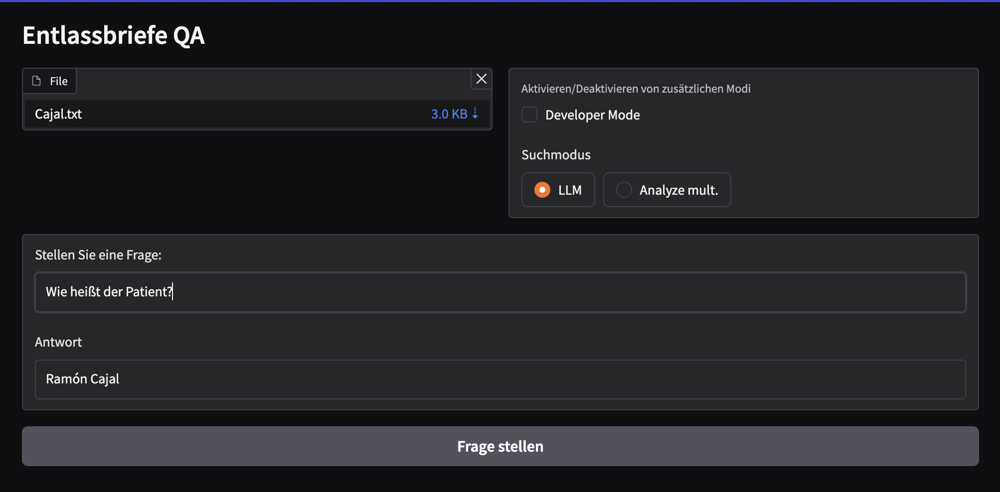

Generating and evaluating relevant documentation
GERD is developed as an experimental library to investigate how large language models (LLMs) can be used to generate and analyze (sets of) documents.
This project was initially forked from Llama-2-Open-Source-LLM-CPU-Inference by Kenneth Leung.
Quickstart
If you just want to it try out, you can clone the project and install dependencies with pip:
git clone https://github.com/caretech-owl/gerd.git
cd gerd
pip install -e ".[full]"
python examples/hello.py
Source: examples/hello.py
"""A 'hello world' example for GERD."""
import logging
from gerd.config import load_gen_config
from gerd.gen.chat_service import ChatService
from gerd.models.model import PromptConfig
logging.basicConfig(level=logging.WARNING)
logging.getLogger("gerd").setLevel(logging.DEBUG)
logging.info(
"Loading chat service..."
" When this is the first time you run this script, it will download the model."
" This may take a few minutes."
)
chat = ChatService(load_gen_config("hello"))
res = chat.submit_user_message({"word": "teleportation"})
logging.info(res)
chat.set_prompt_config(PromptConfig.model_validate({"text": "{message}"}))
res = chat.submit_user_message({"message": "Hello! What is one plus one?"})
logging.info(res)
If you want to try this out in your browser, head over to binder 👉  .
Note that running LLMs on the CPU (and especially on limited virtual machines like binder) takes some time.
.
Note that running LLMs on the CPU (and especially on limited virtual machines like binder) takes some time.
Question and Answer Example
Follow quickstart but execute gradio with the qa_frontend instead of the example file.
When the server is done loading, open http://127.0.0.1:7860 in your browser.
gradio gerd/frontends/qa_frontend.py
# Some Llama.cpp outut
# ...
# * Running on local URL: http://127.0.0.1:7860
Click the 'Click to Upload' button and search for a GRASCCO document named Caja.txt which is located in the tests/data/grascoo folder and upload it into the vector store. Next, you can query information from the document. For instance Wie heißt der Patient? (What is the patient called?).

Prompt Chaining
Prompt chaining is a prompt engineering approach to increase the 'reflection' of a large language model onto its given answer.
Check examples/chaining.py for an illustration.
python examples/chaining.py
# ...
====== Resolved prompt =====
system: You are a helpful assistant. Please answer the following question in a truthful and brief manner.
user: What type of mammal lays the biggest eggs?
# ...
Result: Based on the given information, the largest egg-laying mammal is the blue whale, which can lay up to 100 million eggs per year. However, the other assertions provided do not align with this information.
Source: examples/chaining.py
"""A chaining example for the chat service."""
import logging
from gerd.config import load_gen_config
from gerd.gen.chat_service import ChatService
logging.basicConfig(level=logging.DEBUG)
gen = ChatService(load_gen_config("gen_chaining"))
res = gen.generate({"question": "What type of mammal lays the biggest eggs?"})
print(f"Result: {res.text}") # noqa: T201
Config: config/gen_chaining.yml
model:
name: "Qwen/Qwen2.5-0.5B-Instruct"
temperature: 0.05
max_new_tokens: 512
context_length: 2048
prompt_setup:
- ["system", text: "You are a helpful assistant. Please answer the following question in a truthful and brief manner."]
features:
prompt_chaining:
prompts:
- text: "{question}"
- text: "Here is a statement:\n{response_1}\n\nMake a bullet point list of the assumptions you made when producing the above statement.\n\n"
- text: "Here is a bullet point list of assertions:\n{response_2}\n\nFor each assertion, determine whether it is true or false. If it is false, explain why.\n\n"
- text: "Here is a statement:\n{response_1}\n\n Here is a bullet point list of assertions for that statement:\n{response_2}\n\nFinally, here is some reasoning about the assertions {response_3}\n\nIn light of the above facts, how would you answer the question '{question}'"
As you see, the answer does not make much sense with the default model which is rather small. Give it a try with meta-llama/Llama-3.2-3B. To use this model, you need to login with the huggingface cli and accept the Meta Community License Agreement.